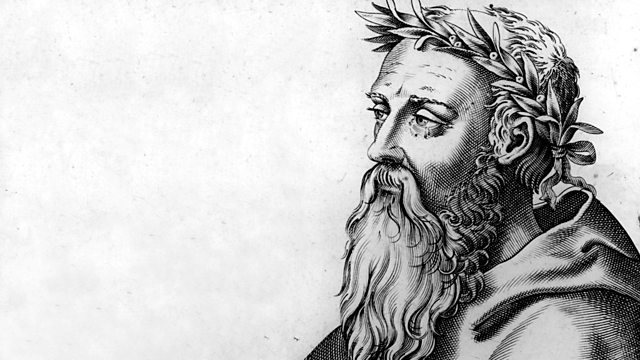

Heraclitus. Source: BBC Radio Hour
Heraclitus of Ephesus was a pre-Socratic Greek philosopher, and a native of the city of Ephesus, then part of the Persian Empire. He was of distinguished parentage. Little is known about his early life and education, but he regarded himself as self-taught and a pioneer of wisdom. From the lonely life he led, and still more from the apparently riddled and allegedly paradoxical nature of his philosophy and his stress upon the heedless unconsciousness of humankind, he was called "The Obscure" and the "Weeping Philosopher".Heraclitus was famous for his insistence on ever-present change as being the fundamental essence of the universe, as stated in the famous saying, "No man ever steps in the same river twice". This is commonly considered to be one of the first digressions into the philosophical concept of becoming, and has been contrasted with Parmenides' statement that "what-is is" as one of the first digressions into the philosophical concept of being. As such, Parmenides and Heraclitus are commonly considered to be two of the founders of ontology. Scholars have generally believed that either Parmenides was responding to Heraclitus, or Heraclitus to Parmenides, though opinion on who was responding to whom changed over the course of the 20th century. Heraclitus' position was complemented by his stark commitment to a unity of opposites in the world, stating that "the path up and down are one and the same". Through these doctrines Heraclitus characterized all existing entities by pairs of contrary properties, whereby no entity may ever occupy a single state at a single time. This, along with his cryptic utterance that "all entities come to be in accordance with this Logos" (literally, "word", "reason", or "account") has been the subject of numerous interpretations.
Diogenes ascribes the theory that Heraclitus did not complete some of his works because of melancholia to Theophrastus.Later he was referred to as the "weeping philosopher", as opposed to Democritus, who is known as the "laughing philosopher".If Stobaeus writes correctly, Sotion in the early 1st century CE was already combining the two in the imaginative duo of weeping and laughing philosophers: "Among the wise, instead of anger, Heraclitus was overtaken by tears, Democritus by laughter." The view is expressed by the satirist Juvenal: The first of prayers, best known at all the temples, is mostly for riches... Seeing this then do you not commend the one sage Democritus for laughing... and the master of the other school Heraclitus for his tears? The motif was also adopted by Lucian of Samosata in his "Sale of Creeds", in which the duo is sold together as a complementary product in the satirical auction of philosophers. Subsequently, they were considered an indispensable feature of philosophic landscapes. Montaigne proposed two archetypical views of human affairs based on them, selecting Democritus' for himself. The weeping philosopher may have been mentioned in William Shakespeare's The Merchant of Venice. Donato Bramante painted a fresco, "Democritus and Heraclitus," in Casa Panigarola in Milan.
The motif was also adopted by Lucian of Samosata in his "Sale of Creeds", in which the duo is sold together as a complementary product in the satirical auction of philosophers. Subsequently, they were considered an indispensable feature of philosophic landscapes. Montaigne proposed two archetypical views of human affairs based on them, selecting Democritus' for himself. The weeping philosopher may have been mentioned in William Shakespeare's The Merchant of Venice. Donato Bramante painted a fresco, "Democritus and Heraclitus," in Casa Panigarola in Milan.
Listen to Peter Adamson talk about Heraclitus: